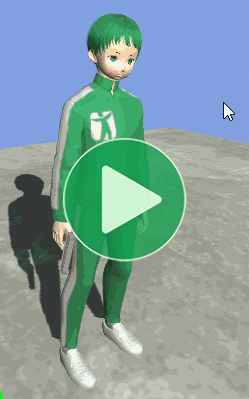

Location: Samples/01 Basics/05 Basic Character
Recommended After: Basic Movement and Transitions
Learning Outcomes: in this sample you will learn:
How to combine simple behaviours into more complex ones.
Summary
This sample combines the Basic Movement and Transitions samples on a single character to demonstate several common challenges you might encounter when implementing more complex behaviours and how you can overcome them.
- Animancer only ever plays animations when you tell it to, so if the wrong animation is playing then most likely your scripts are telling it to play the wrong animation.
- Enums are an effective way to keep track of what things are doing for relatively simple scenarios, but for more complex situations it's often better to use a proper Finite State Machine system.
- The approach used in this sample is appropriate for simple situations but generally ineffective in more complex use cases. The Characters sample re-implements the same logic as this sample using Animancer's Finite State Machine system which generally makes it much easier to extend the character.
Overview
The code structure looks similar to the Transitions sample with the addition of a movement animation:
{kind=link}
Logical States
Animancer doesn't impose any limits on when you can play any given animation, it simply plays whatever you tell it to. This means your scripts are responsible for determining how your animations can interrupt each other.
In this case, we have 3 animations and we want to implement the following rules:
- Idle can play anything.
- Walk can play anything.
- Action can only play Action (to allow Rapid Fire).
Since Idle and Walk have the same rules, we effectively want two logical states: "Acting" and "Not Acting". These logical states are entirely separate from the animation states (AnimancerStates). A logical state can have any number of animation states associated with it:
- Acting has one animation (Action).
- Not Acting has two animations (Idle and Walk).
- An Attacking state could have animations for each of the attacks in a sequence.
- A logical state could even have no associated animations. For example, an effect that freezes the character could simply call
_Animancer.Graph.PauseGraph();to pause the character in their current pose instead of playing a new animation.
State Enum
Since we only have two logical states, we could just use a bool to represent "Can Act" or "Is Acting". That would be fine for this sample, but it's a bit too simple for most games so we're going to demonstrate how to use something more flexible: Enumeration Types (commonly called enums).
An enum needs a name like any other Type in C# so since the class is called BasicCharacterAnimations we could call the enum BasicCharacterAnimationState. But that's rather long and would be annoying to repeat all over the place so instead we can make use of the C# feature Nested Types to declare the enum inside the class, which means that it can simply be called State.
public class BasicCharacterAnimations : MonoBehaviour
{
private enum State
{
NotActing,
Acting,
}
If we made it a public enum then other scripts would be able to use it via BasicCharacterAnimations.State, but since this one script is the only one it will be used in we just make it private.
With the enum declared, we also need a field to store the current State that the class is in.
private State _CurrentState;
Methods
This sample has two methods which are copied directly from the previous samples. The only difference is that they now set the _CurrentState to the appropriate value when they play their animations:
| Movement | Action |
|---|---|
UpdateMovement is a copy of the Update method from the BasicMovementAnimations script in the Basic Movement sample. |
UpdateAction is a copy of the Update method from the PlayTransitionOnClick script in the Transitions sample. |
|
|
Initialization
The startup code needs to change a bit now.
PlayTransitionOnClick (Old) |
BasicCharacterAnimations (New) |
|---|---|
|
Previously, the |
But now, the |
Update
The last thing we need to do is write the Update method to call UpdateMovement and/or UpdateAction depending on the _CurrentState.
protected virtual void Update()
{
if (_CurrentState == State.NotActing)
{
UpdateMovement();
UpdateAction();
}
else
{
UpdateAction();
}
}
That would do what we want, but if we had a few more states to check it would become a repetitive series of If Statements which is generally considered a bad practice because Switch Statements can do the same job more cleanly.
protected virtual void Update()
{
switch (_CurrentState)
{
case State.NotActing:
UpdateMovement();
UpdateAction();
break;
case State.Acting:
UpdateAction();
break;
}
}
Ordering
One last thing to note is that the order in which State.NotActing calls those methods is important.
If you were to put UpdateAction before UpdateMovement like this:
case State.NotActing:
UpdateAction();
UpdateMovement();
break;
When the user Left Clicks, the following would happen:
- Unity calls
Update. Updatereachescase State.NotActing.UpdatecallsUpdateAction.UpdateActionchecksSampleInput.LeftMouseUpwhich istrueso it setsState.Actingand plays_Action.Updateis still running and still insidecase State.NotActingso now it callsUpdateMovement.UpdateMovementsetsState.NotActingand plays either_Moveor_Idle.
The problem here is that even though State.Acting was set properly in step #4 (along with its animation), it gets immediately set back to State.NotActing in step #5 so you will never actually get to see the character perform the action. That is why we call UpdateMovement before UpdateAction.
Conclusion
Here's what the full script looks like.
using Animancer;
using UnityEngine;
public class BasicCharacterAnimations : MonoBehaviour
{
[SerializeField] private AnimancerComponent _Animancer;
[SerializeField] private ClipTransition _Idle;
[SerializeField] private ClipTransition _Move;
[SerializeField] private ClipTransition _Action;
private State _CurrentState;
private enum State
{
NotActing,
Acting,
}
protected virtual void Awake()
{
_Action.Events.OnEnd = UpdateMovement;
}
protected virtual void Update()
{
switch (_CurrentState)
{
case State.NotActing:
UpdateMovement();
UpdateAction();
break;
case State.Acting:
UpdateAction();
break;
}
}
private void UpdateMovement()
{
_CurrentState = State.NotActing;
float forward = SampleInput.WASD.y;
if (forward > 0)
{
_Animancer.Play(_Move);
}
else
{
_Animancer.Play(_Idle);
}
}
private void UpdateAction()
{
if (SampleInput.LeftMouseUp)
{
_CurrentState = State.Acting;
_Animancer.Play(_Action);
}
}
}
If you enter Play Mode, you have a character that can:
- Stand still by default.
- Walk when you hold
W. - Shoot when you Left Click.
What Next?
| Sample | Topic |
|---|---|
| Library Character | Re-implementing the same behaviour as this sample using Transition Assets and Transition Libraries. |